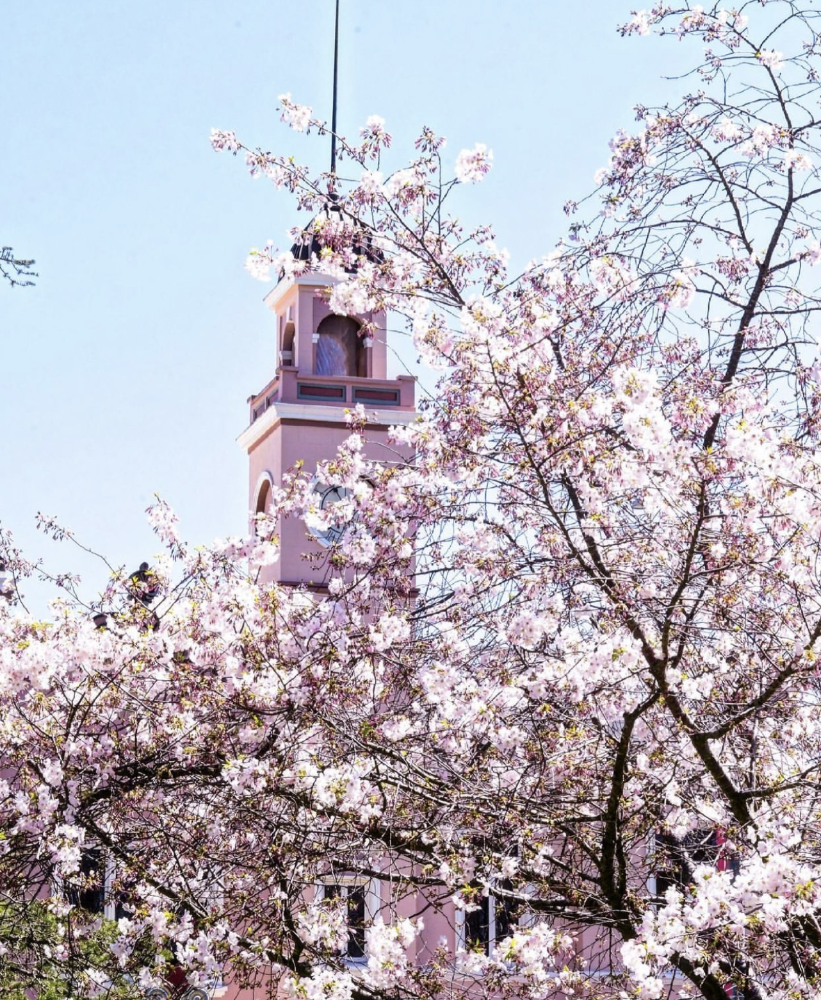

Soda Spring
5 Day Forecast
The Outdoors At Your Front Door
Powered by Revize
Whether you're here to experience our rich history or our wonderful outdoors, Soda Springs and Caribou County has a lot to offer!
Travel the Oregon Trail and see 14 historic sites, such as authentic wagon ruts, the World's Only Captive Geyser, Sheep Rock Point, Wagon Box Grave, or Carbonated Springs including our famous Hooper Springs and Octagon Springs.
Visit Chesterfield, a nearby National Historic District, five local buildings on the National Register of Historic Places and learn about the historic trains, dams, farming, and Mining that built Soda Springs.
View wildlife and birds at the Formation Springs and Cave Preserve Visit Greys Lake National Wildlife Refuge, Play a round of Golf, explore the pathways connecting City Parks or in the Winter, Soda Springs Nordic Ski Association Cross Country Ski Trails and Ice Skating Rink or Snowmobiling.
Main Street you will find many items of history, along with our City Park, and Public Library. The City of Soda Springs Visitor Center is located next to the Geyser along with many unique businesses and restaurants.
The Area Brochure is a great starting point to explore historical places including our famous Geyser, Hooper Springs or the wagon ruts with more than a dozen additional places to adventure to.
If you're wanting to explore our parks or recreational opportunities, then head on over to the Recreation portion of the site.
This area will provide you information on everything from parks, trails, camping, fishing and more!
For lodging options visit our rentals and lodging portion of the site.